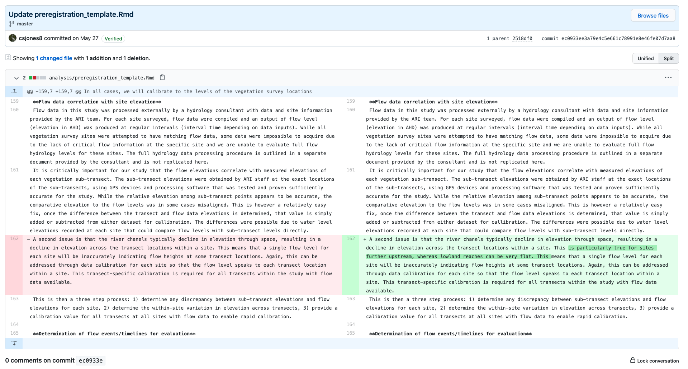
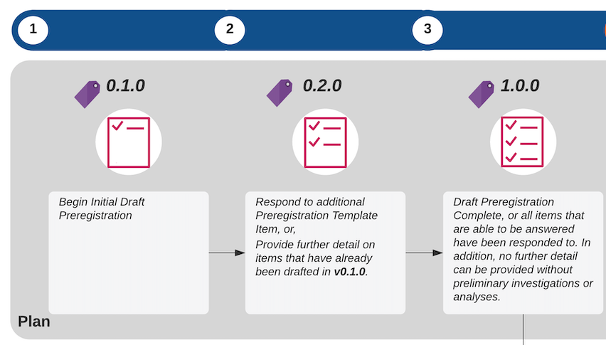
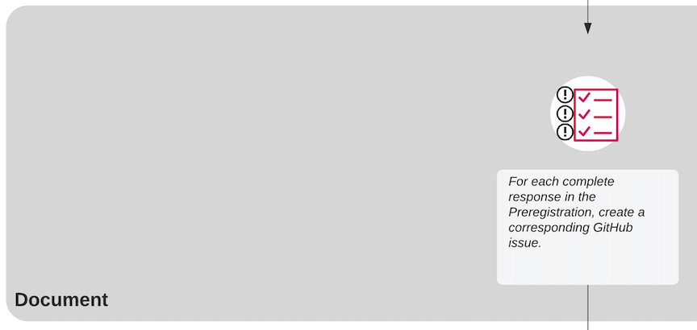
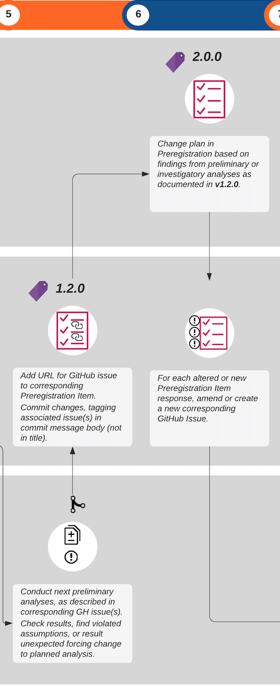

Implementing Adaptive Preregistration with Git and Github
Adaptive Preregistration using GitHub
We propose leveraging both the version-control and the project management features of GitHub (www.github.com) as a tool for implementing adaptive preregistration. GitHub is a web-interface that utilises the version-control system, ‘git’, to store files, track changes, and enable collaboration on computer code (Braga et al. 2023). When a document is version-controlled using Git and GitHub, each version of a document can be time-stamped, and is assigned its own unique identifier, or commit-hash1 so that chronological records of changes to a collection of files, stored in a ‘repository’, are made transparent (Braga et al. 2023; Bryan and Crossman 2008).
Why GitHub for Adaptive Preregistration?
- Because GitHub documents are ‘time-stamped’ the genesis of the preregistration from one version to the next is apparent.
- Moreover, using the diff view of a document on GitHub, exactly how and where a document has changed between versions is clear - additions are coloured green, deletions are coloured red, and changes within a line are highlighted.
- The project management and communication features of GitHub, such as GitHub Issues,
- tagging and release
GitHub users can collaborate by contributing, modifying and discussing existing code, reporting bugs and other problems, discover new code and data, and publish new code.
GitHub also integrates several communication features, such as Github Issues, Github Discussions, Github Pages, which allows users to engage in discussions, to plan and collaborate on code, and publish information to a webpage (see Box 1).” (Braga et al., 2023, p. 1365) (pdf)
The preregistration document should be saved within the project repository that contains the data and modelling and analysis code, such that any results from analyses that cause the analysis plan to change can be linked and referenced in the updated version of the plan – thus facilitating the process of model checking. By providing a method for contrasting the actual analysis undertaken against the preregistered analysis, this provides a mechanism for allowing reviewers to properly evaluate the preregistration against the reported analysis. It thus provides a way of marking preregistered parts of a report from non-preregistered parts of the analysis.
How it works…
GitHub is used to track amendments to the preregistration — each time an additional template item is answered, or an alteration is made to the preregistration, the change should be committed to the repository. Semantic versioning is used to document each version of the preregistration. Semantic versioning2 is an open-source software engineering practice used to document and and communicate the development of software, in a way that allows others to depend on it (Kitzes, Turek, and Deniz 2018). We have created our own semantic versioning scheme to be used to specifically document the incremental version of the preregistration, in tandem with GitHub’s tag and release feature, each interim preregistration is tagged and released with its semantic version number. All template items that can be completed should be completed before any data analysis or modelling proceeds. The preregistration should be completed until a) no further detail can be supplied or b) no additional template item can be answered until preliminary investigations or analyses are undertaken (Fig 3, steps 1 - 3).

…Shifting from planning to execution…

Before shifting from planning to the execution of the interim preregistration, each complete response in the interim preregistration should have a corresponding GitHub issue3 created (Figure 3, step 3, ‘Document’). Relevant discussion between analysts about how to proceed with the intended analysis or interpreting preliminary results are tracked within an issue’s thread. Each issue is automatically assigned a unique number by GitHub. Any code or analysis outputs, such as figures, tables or other files, should be committed and tagged with the issue number, so that all analysis addressing that task is tracked within the issue’s thread (Fig 3, step 4, ‘Do’). The URL for the GitHub issue should then be added to the relevant preregistration item, the preregistration document should then be committed with the changes, and the version number of the preregistration updated in a new release.
… And back again.

As the modelling proceeds, further detail on later phases of the analysis can be iteratively updated and preregistered. Where the results of model evaluation and analysis reveal that there are problems with the model, plans can be changed, and again the next phase can be preregistered. For example, if a researcher finds that assumptions are violated or other unexpected results occur that force a change to the planned analysis, the preregistration can be updated based on the findings of those analyses. When this occurs, the major version number of the preregistration document should be incremented (Fig 3 steps 5 - 6). Since the findings of the analyses are tracked within the relevant issue for that template item, and the issue is recorded in the preregistration itself, the trigger for the change in the plan is made explicitly clear.
For each altered or new preregistration item, the issue thread should either be updated, or a new issue created respectively (Fig 3, step 6). Those analyses are then either reconnected based on the revised plan or the new investigatory analyses are then conducted (Fig 3, step 7).
This process continues until the preregistration is complete, and the researcher can continue to execute the plan as it has been fully described in the final version of the preregistration document (Fig 3, step 8 - 9).
Flexible Strategies, Preliminary Analyses or Investigations
When a researcher needs to conduct preliminary analyses or check parts of the data before committing to a particular decision about the model or analysis, they can specify a flexible strategy in their response to that preregistration item by:
- stating what needs to be known to move forward with the modelling and analysis and why the analysis is necessary
- explaining how the researcher will test this, and what parts of the data will be used in that analysis
- describing how the results will be interpreted, listing each potential decision and the analysis result that will trigger that decision, where possible.
A step-by-step guide to implementing Adaptive Preregistration with GitHub
The initial preregistration phase
The first iteration of preregistration
- Edit the document with your responses to the template items
- View the document in GitHub here
- Click on The ‘edit document’ button:

- You will be able to edit the document directly in GitHub, Edit away!
- Commit changes
- If you are finished, or ready to save your changes by ‘committing’ them, commit by scrolling underneath the document editing window. There will be a box called “commit changes”, enter in the commit message box the following:
- Your message should contain the following:
Initial Preregistration #IssueNumber. Tag the Preregistration GitHub issue number in the commit message (For this repository, it’s#17). - Fill out the additional description box briefly describing the changes you just made
- Click “commit”

Incrementally Updating the Preregistration Plan
Moving from general to specific: Incrementally updating the preregistration
You will likely find that some items on the template cannot be answered just yet. One reason being that the level of detail required to adequately answer the template item just isn’t clear yet, and more thought and time is needed, or you need to be further along the modelling process to be able to adequately answer the question. Another reason is that downstream decisions might depend on some preliminary investigations of the data – for example, you might need to explore the shape of a measured variable before you can properly specify the full model.
In the latter situation, where possible, you can preregister your preliminary analysis: describing what the preliminary analysis entails, providing a short and relevant list of plausible outcomes, and describing for each of those possible outcomes how the dependent or down-stream decision-point will change depending on the outcome.
Using GitHub to update the plan
We will use GitHub to track amendments to the preregistration for the two situations described above ( a) adding more detail, answering incomplete questions; b) Responding to findings of a preliminary analysis already described in your preregistration).
To make the changes to the preregistration document, follow the same instructions as for creating the initial preregistration above - simply edit the preregistration in GitHub, and commit the changes.
As for the situation where you are responding to findings of a preliminary analysis that you have already described in your preregistration, see the below sections on Moving from planning to doing and Shifting back to planning from doing.
Moving from planning to doing
Before you begin to do or start anything you’ve planned within your preregistration, you must create a GitHub issue for that item, phase, or step in the modelling process, follow these steps:
- View the preregistration document in Github, and click on the line-numbers on the left to highlight the PRT item text, as well as your response to the item. For example, let’s say you want to start working the model checking, you would highlight the following in the document. Note that once you’ve highlighted some lines, a little box with an ellipsis appears on top of the lines numbers.

- Click on the tiny box with the ellipsis, and a pop-up dialogue box will appear with 4 options:
Copy lines,Copy permalink,View git blame,References in new issue. Select the last optionReference in new issue.
- This will open up a new window with a new GitHub Issue for you to complete. Note that part of the issue description has already been filled out for you, this is a reference to the lines you just highlighted:
 Which is cool, because if you open the
Which is cool, because if you open the Previewtab to view the preview of your issue, it will look like this:
Add any further information or technical details about going forward and working on this task, as necessary. Submit the issue to save. Any work, and subsequent commits on this topic should be tagged with the issue number. We now have a mechanism for linking your actual analysis and actions to the planned analysis in the preregistration document.
Dealing with unexpected outcomes, and changing plans: Shifting back to planning from doing
Sometimes assumptions are violated, or there are other unexpected outcomes of preliminary analyses, and you will need to change plans. How do we deal with this?
- Add the URL to the relevant GitHub issue under the corresponding Preregistration Item.
- Add any the URL for any linked commits to the Preregistration Item.
- revise the Preregistration, where necessary by editing the Preregistration document in GitHub, as per previous instructions.
- Commit the changes with the following commit message header:
- Describe the trigger for the Preregistration revisions in brief detail within the commit message body, adding the link to the relevant GitHub issue containing the tagged commits that triggered the revision.
‘Living preregistration’ - tracking changes to the Preregistration Draft
We will leverage GitHub’s tagging and release feature in conjunction with Semantic Versioning to document and track changes to the preregistration document.
GitHub releases mark software iterations that you can release and deploy4. Within the context of adaptive preregistration, we can use releases to mark interim versions of the preregistration, as well as to take a snapshot of the state of the entire repository at that moment in time.
A summary of the types of preregistration changes, and the corresponding required version and GitHub features are presented in Table 1. Note that anything up until the complete preregistration should be additionally tagged as a ‘pre-release’ to communicate that the initial preregistration is not yet complete.
| Preregistration Change or Action | GitHub Mechanism | Semantic Versioning |
|---|---|---|
| Changes preceding initial completion of preregistration | Tag and Mark as ‘pre-release’ | Minor increment. E.g. 0.2.0 The Major value should not exceed 0.fledge::bump_version("minor") |
| Incremental Change, e.g. respond to new question. | Tag and Release | Minor increment. E.g. 0.2.0 The Major value should not exceed 0. fledge::bump_version("minor") |
| Initial Preregistration complete. Note that ‘complete’ needs to be decided. Is complete after all preliminary and investigatory analyses have been done and the final Preregistration is complete, or is it the first iteration, where no more items can be filled out until some initial analyses are undertaken? | Tag and Release | Major increment to 1.0.0. fledge::bump_version("major"); fledge::finalize_version(). |
| Major change to a complete Preregistration – no looking or analysing at data. | Tag and Release | Major increment >1.0.0. fledge::bump_version("major"); fledge::finalize_version(). |
| Linking implemented work to the Preregistration Item | Update Preregistration with GH Issue URL and all relevant commit hashes pertaining to that Preregistration Item + Commit. Tag and Release that preregistration commit. | Minor increment. fledge::bump_version("minor"). |
| Data-dependent changes with registered flexibility Adapting the Preregistration on the basis of results from preliminary or investigatory analyses | Update Preregistration with GH Issue Link and all relevant commit hashes pertaining to that Preregistration Item + Commit. Respond to dependent incomplete Preregistration Items or Update existing / already completed Preregistration Items + Commit. Tag and Release. | Major increment. fledge::bump_version("major"). |
| Minor mistakes or changes | Changes including small typos, or minor elaborations on existing specified plans | Patch increment. E.g. 0.1.2. fledge::bump_version("patch") |
Using the fledge:: R package for semantic versioning and to document preregistration changes
The package fledge:: can be used right from the R console to bump the version number, make releases, and auto catalogue a chronological history of changes recorded a NEWS.md file that is updated and published with every release. A detailed guide to using fledge:: can be found here https://fledge.cynkra.com/articles/fledge.html.
This package is not a mandatory component of the process, however can be a useful tool for implementing semantic versioning, tagging and releasing. All of these actions can be implemented in the GitHub browser with a point and click interface.
References
Braga, Pedro Henrique Pereira, Katherine Hébert, Emma J. Hudgins, Eric R. Scott, Brandon P. M. Edwards, Luna L. Sánchez Reyes, Matthew J. Grainger, et al. 2023. “Not Just for Programmers: How GitHub Can Accelerate Collaborative and Reproducible Research in Ecology and Evolution.” Methods in Ecology and Evolution 14 (6): 1364–80. https://doi.org/10.1111/2041-210X.14108.
Bryan, Brett A., and Neville D. Crossman. 2008. “Systematic Regional Planning for Multiple Objective Natural Resource Management.” Journal of Environmental Management 88 (4): 1175–89. https://doi.org/10.1016/j.jenvman.2007.06.003.
Kitzes, J, D Turek, and F Deniz. 2018. The Practice of Reproducible Research: Case Studies and Lessons from the Data-Intensive Sciences. Edited by J Kitzes, D Turek, and F Deniz. Oakland, CA: University of California Press.
Footnotes
https://docs.github.com/en/free-pro-team@latest/github/getting-started-with-github/github-glossary#commit-id↩︎
The semantic version is a 3-part numeric identifier separated by points, e.g.:
0.0.1, wherein the first number sequences a major version of the preregistration, the second number sequences a minor change, and the third number sequences small changes or patches, yielding:MAJOR.MINOR.PATCH. See https://semver.org/ for further information. Further detail on how to use semantic versioning with adaptive preregistration is summarised in Table 1.↩︎Instructions for creating releases are here: https://help.github.com/en/github/administering-a-repository/managing-releases-in-a-repository↩︎